Makes events, stunts, and videos people seek out. You weren't looking for an energy drink. They made you want one.
● Capture demand
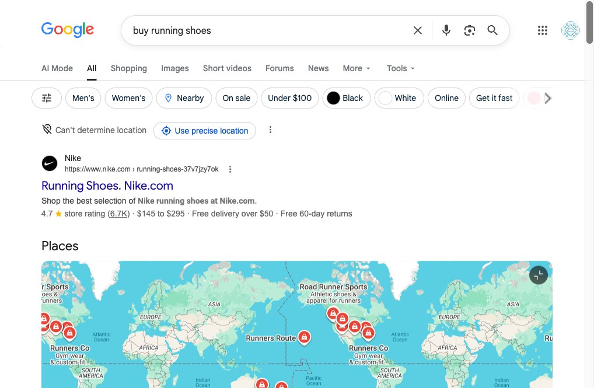
Google Search
Shows up the moment you search "buy running shoes." It captures demand that already exists. It can't create new demand.
Most small businesses only capture demand, then wonder why growth stalls.
1.1 · What Marketing Actually Is 04
Red Bull sells cans by making media.
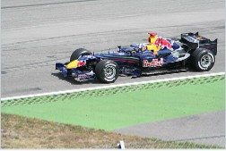
Sponsorship
A Formula 1 team
Stunt
The Stratos space jump
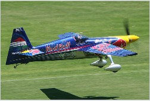
Owned event
The Air Race series
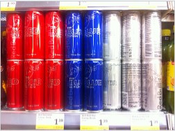
The product
What it's all selling
SMU Academy · Day 1
1.2
Customer & Market
People don't buy products. They hire them for a job.
1.2
1.2 · Customer & Market 05
What is a "Job to be Done"?
Customers don't really want your product. They "hire" it to make progress on something in their life. That progress is the job — and marketing's role is to connect what you sell to it.
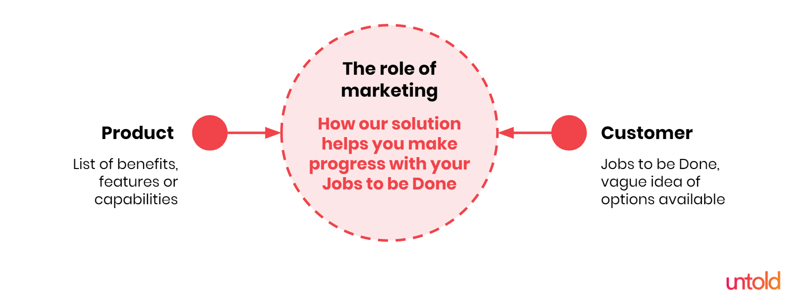
Market the features and you compete on specs. Market the job and you understand why they choose you.
Identify the job: someone just bought a power drill.
Don't describe the drill. Run it through the map — what are they actually hiring it to do? Fill in all five, out loud.
Problem
What are they trying to get done?
Persona
Who, specifically, has this problem?
Alternatives
What would they do instead of buying one? don't skip this
Frequency
How often does the job even come up?
Why
The deeper reason it matters — how they want to feel, and be seen.
so… what's the real job? →
Framework: Reforge — Use Case Map.
1.2 · Customer & Market 08
The same map — now filled in.
Nobody wakes up wanting a drill. Look at what they're really hiring it for.
Problem
A shelf needs to go up — and there's no hole in the wall.
Persona
A weekend home-fixer, not a tradesperson. Few tools, wants it done today.
Alternatives
Borrow a neighbour's · hire a handyman · a hammer-and-hope bodge · leave it undone.
Frequency
Rarely — a few times a year. Bursty, not a routine.
Why
To feel capable and in control on a Saturday — and to be seen as someone who just handles things.
so — can you hire a drill? ✓ they're hiring the hole → the shelf → “I did that myself.”
Know the job, and you know what you're really competing against — a YouTube video, a handyman, or doing nothing.
1.2 · Customer & Market 09
McDonald's asked: what job is a milkshake hired for?
Context
A long, boring morning drive. Alone in the car, with only one hand free.
The job
"Give me something filling that makes the commute less boring."
Struggles
Bagels are dry and crumbly. Bananas are gone in a minute. Coffee doesn't fill you up.
Desired outcome
Stay full and occupied the whole drive, with one hand and no mess.
So the milkshake wins: thick enough to last, drinkable one-handed, filling. Its real rivals are bananas and bagels, not other milkshakes.
1.2 · Customer & Market 10
Q.
What job is your customer really hiring you to do?
Write the problem in your customer's own words.
List the alternatives, often a spreadsheet, a rival, or doing nothing.
6 min on your own · 3 min with a partner
SMU Academy · Day 1
1.3
Positioning & Brand
You know who it's for and the job they hire you for. Now: what do you stand for — and how do you make them choose you, again and again?
02
1.3 · Positioning & Brand 11
Position ≠ Brand
Position
The one idea you own in a mind.
Brand
Everything that gathers around it.
the worked example
POSITION
Safety
Swedish engineering
Built to last
Family-first
Practical premium
1.3 · Positioning & Brand 12
Positioning is earned, not announced.
Positioning · the input
The choice you make about how you want to be perceived relative to the alternatives.
Volvo didn't say "we're safe." In 1959 it invented the three-point seatbelt and gave the patent away free to every carmaker. It proved the position with a decision instead of claiming it.
Claims invite doubt. Proof lets people convince themselves.
1.3 · Positioning & Brand 13
You can't say your way out of what you are.
Brand · the output that compounds
The actual set of meanings, feelings, and associations that end up living in people's heads over time.
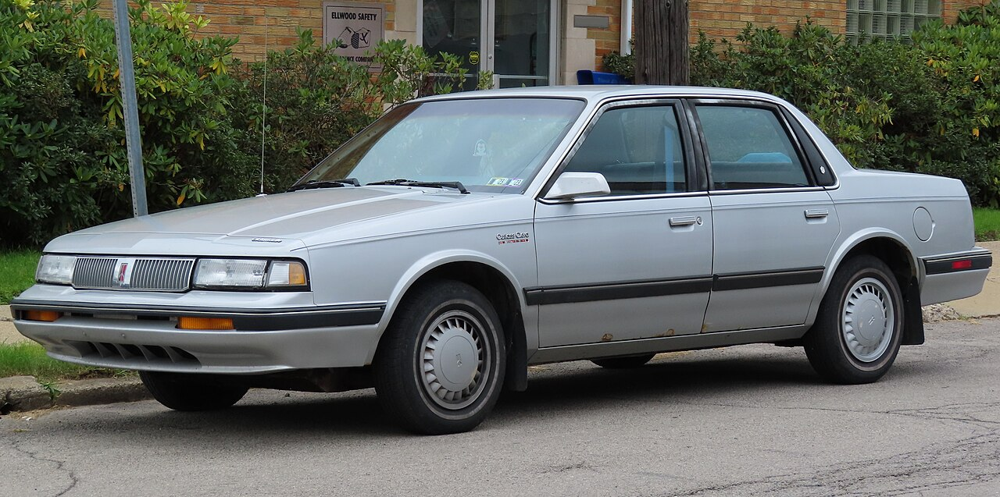
◆ The claim · GM, 1988
"This is not your father's Oldsmobile."
…but this was the car. Ads paired celebrities (Ringo Starr, William Shatner) with their kids to look young.
● The reality
Same boxy cars. Same showroom.
The tagline insulted the loyal older buyers who actually bought Oldsmobiles — and never won the young ones it chased. Nothing changed but the words.
The proof — in the numbers
1.2M cars at its 1984 peak → never above 500k after 1990 → brand dissolved in 2004, after 107 years.
1.3 · Positioning & Brand 14
Once you've chosen your position, you build the brand in three layers.
Decide what you stand for, tell it as a story, then prove it through what you do. Each layer feeds the one below it.
DECIDE
Strategy
The one thing you stand for.
Nike: victory for every body.
Lululemon: gear for the "sweatlife."
Love, Bonito: fashion designed for the Asian woman's body.
EXPRESS
Narrative
The story, with the customer as hero and you as the guide.
Nike: you vs your limits — "Just Do It."
Lululemon: your best self in motion; they're the coach & community.
Love, Bonito: the modern Asian woman, finally dressed for her real body & life.
PROVE
Marketing
The acts that broadcast it, year after year.
Nike: athlete films, the swoosh everywhere.
Lululemon: free in-store yoga, local ambassadors, run clubs.
Love, Bonito: blogshop → stores across SEA, real-customer fit, community.
1.3 · Positioning & Brand 15
Built it — now you grow it with four moves.
The last slide was how you build a brand. This is what you repeat to grow it — the bottom "prove it" layer, turned into a daily job. (Byron Sharp, How Brands Grow.)
1
Own the position you chose — keep proving it.POSITIONING
The Strategy layer from the last slide, now defended through visible decisions.
2
Be impossible to forget.DISTINCTIVE ASSETS
Same look, name, and message everywhere, for years.
3
Show up at the buying moment.MENTAL AVAILABILITY
Be the brand people think of first when the need hits.
4
Be easy to find and buy.PHYSICAL AVAILABILITY
Reach your whole market, including people who barely know you.
SMU Academy · Day 1
1.4
The Offer
You've decided who you're for and what you stand for. Now the thing itself — what you sell, at what price, packaged how.
03
1.4 · The Offer 16
Your offer = product + price + how it's packaged.
The offer is everything the customer weighs before buying: the product itself, the price, and the way it's bundled, guaranteed, and delivered. Change any one and you change what they decide.
The customer
Jobs · Pains · Gains
The job they're trying to do
What frustrates them today
The win they're hoping for
Your offer
Product · Relievers · Creators
What you sell
How it removes the pain
How it delivers the gain
1.4 · The Offer 17
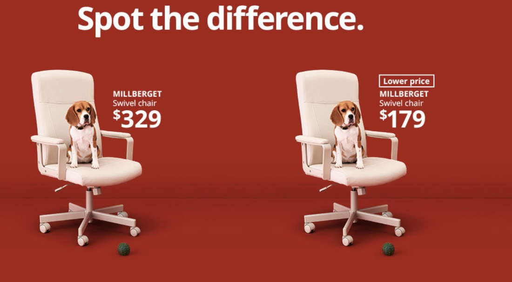
A clear trade-off · IKEA
Same chair, lower price — the offer is the strategy.
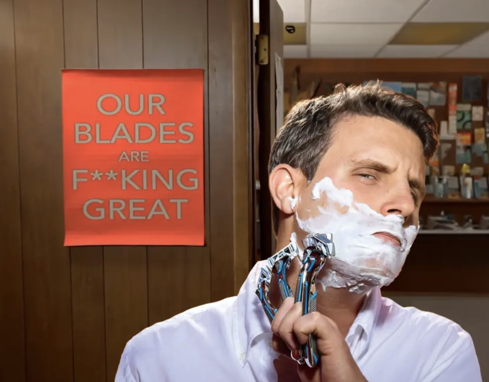
The offer was the idea · Dollar Shave Club
$1/month, blades to your door. The offer built the brand — before a cent on ads.
When marketing isn't working, the offer is often the real problem.
SMU · Day 1 — Module 1
Pause · ~15 min
Tea Break
So far: who you're for, why you, and the offer. After the break — how people actually find you, convert, and how to measure it.
☕
SMU Academy · Day 1
1.5 — Demand & Channels
Great product. Zero awareness. Now what?
The best offer in the world still loses to the one people actually hear about. Now: how do they find you?
04
1.5 · Demand & Channels 18
Match the message to the intent.
Seewidest audience, no intent
social · video · PR
Thinkconsidering a solution
SEO/AEO · content · email
Doready to buy
search ads · product pages
Careexisting customers
email · loyalty · referral
1.5 · Demand & Channels 19
One channel, big spike
Dollar Shave Club
One launch video, made for about $4,500, brought 12,000 sign-ups in 48 hours.
Stay present until they're ready
HubSpot
Software gets bought once every few years, so they built a content habit to stay top of mind through the long wait.
Find the stage you're missing, then build one channel that keeps paying off.
1.5 · Demand & Channels 20
Dollar Shave Club
One video. 12,000 sign-ups in 48 hours.
A 2012 launch video, made for about $4,500. It built the whole brand before they spent a cent on traditional ads.
🎯 Objective?↳ Acquisition · a launch
1.5 · Demand & Channels 21
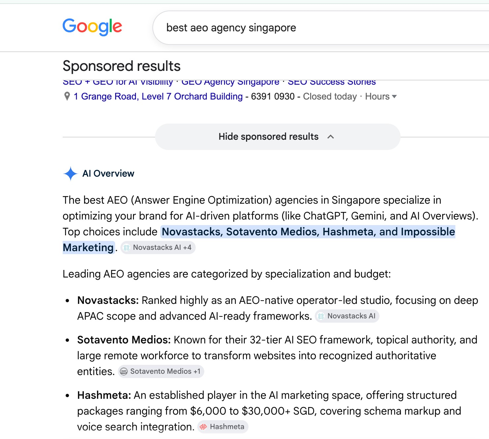
Novastacks · our own
The AI names us first.
Search "best AEO agency Singapore" and Google's AI Overview puts Novastacks at the top of its answer. New customers discover us inside the AI's recommendation — not by scrolling ten blue links. That's AEO.
🎯 Objective?↳ Discovery · new-customer awareness
1.5 · Demand & Channels 22
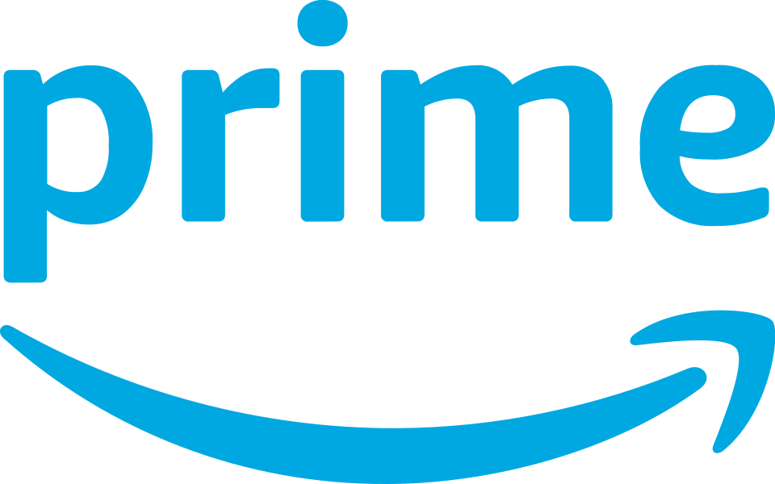
Buy now with 1-Click ›
Amazon
1-click checkout. Prime membership.
1-click checkout makes buying effortless. Prime makes leaving costly.
Every December, Spotify turns each user's own listening data into a personalised, shareable story. Users post it everywhere — free reach that pulls new users in, every year.
🎯 Objective?↳ Retention & Advocacy
1.5 · Demand & Channels 24
Q.
Where is the gap in how customers find you?
Map your channels onto See, Think, Do, Care. Most owners sit only at "Do."
Pick one channel to build first.
8 min · 3 min to share
SMU Academy · Day 1
1.6
Conversion & Retention
Demand is useless if it leaks. Convert the interested, then keep them.
1.6
1.6 · Conversion & Retention 25
Convert, then keep.
Convert
→
Keep
→
Advocate
↺
Convert
Remove friction so an interested person actually buys.
Keep
Build the habit: a trigger, an action, a reward, repeated.
Advocate
Happy customers bring in the next ones at low cost.
1.6 · Conversion & Retention 27
Q.
Where do you lose people, and why don't they come back?
Walk your own buying process. Name one point of friction to remove this week.
Give customers one reason to return.
7 min · 3 min to share
SMU Academy · Day 1
1.7 — Measurement & Growth
Did it actually work?
You've created demand, converted, and kept customers. Now the one question that funds the next round: is this a machine, or a money pit?
06
1.7 · Measurement & Growth 28
Input. Output. Outcome.
Every marketing number is one of three things — what you put in, what the campaign produced, and what the business actually got. Most owners confuse the middle one for the last.
1 · Campaign Input
What you put in
•Ad spend / budget
•Content produced — posts, emails, ads
•Channels & time
→
2 · Campaign Output
How efficiently it ran
•Impressions & reach
•CTR · CPC
•CAC · ROAS
•LTV · LTV : CAC
→
3 · Business Outcome
What the business got
•# of new customers
•Active users
•Revenue & growth
Outputs feel good. Outcomes pay the bills. Never report one as if it were the other.
1.7 · Measurement & Growth 29
What you measure is what you chase.
Measurement steers strategy — chase the wrong number and you optimise toward the wrong business. There's even a law for it:
⚖ Goodhart's Law"When a measure becomes a target, it stops being a good measure." Reward the team on leads → a CRM full of junk. Chase impressions → reach that never buys.
◆ Vanity metrics
Look impressive. Guide nothing.
•Impressions & reach
•Likes & followers
•Email open rate
•"We went viral"
● Actionable metrics
Tie to a decision.
•Conversion rate
•CAC & LTV : CAC
•Repeat purchase / retention
•Revenue per customer
If a number can't change a decision, it's decoration.
1.7 · Measurement & Growth 30
Spend $200 to win a customer worth $800.
That is a healthy 4 to 1. Two things to check next: how long until you earn the $200 back, and which stage leaks the most.
You don't need perfect data. Know your CAC, your LTV, and your biggest leak.
1.7 · Measurement & Growth 31
Where's your leak?
01
Demand
No one finds you.
↳ fix channels
02
Positioning
They find you but don't get why you.
↳ fix the message
03
Conversion
Interested, but they don't buy.
↳ fix the offer
04
Retention
They buy once, then leave.
↳ fix the experience
Fix the earliest serious leak first. It is rarely the loudest one.
SMU · Day 1 — Lunch
Pause
Lunch Break
That's the morning's strategy — who you're for, why you, the offer, and where you leak. After lunch, the channels that put it to work: social, influencers, content and email.
🍴
SMU · Day 1 — Module 2
Module 2
Channel Marketing
Now the channels — where the right people actually find you, and how to show up well on each.
2
SMU · Day 1 — Module 2
2.1
Social Media
Organic reach, influencers and UGC, and content built for each platform.
2.1
2.1 · Social Media 02
Social media marketing is usually three workstreams.
Most owners think "social" is one thing — posting. It's really three different jobs, each reaching a different audience.
01 · Owned
Your own social accounts
The shop that's open 24 hours — an extension of your website
Most followers are your loyal community, or people just learning about you
Use it for product announcements and to engage your most frequent, loyal customers
02 · Paid Social
Ads you buy on the platforms
You buy ads on Instagram or Facebook
Mostly used for user acquisition — reaching new users and prospects
Puts you in front of people who don't follow you yet
03 · Influencers
Third-party creators
You engage influencers on the social platforms
They expose their own audience to your products and services
Borrowed reach and borrowed trust, beyond your own following
2.1 · Social Media 03
Social media is like having a shop that is open 24 hours a day. It allows you to:
Show your products and services
Talk to customers directly
Build trust before they ever visit your store or website
Builds trust and credibility through personal endorsements
Reaches targeted audiences more effectively than generic ads
Potential to boost brand awareness, engagement and sales
Strategies
Sponsored posts or videos
Product reviews/unboxing
Giveaways or contests
Affiliate partnerships
2.1 · Social Media 20
Start Here: Defining Objectives
Are you trying to:
Build awareness?
Borrow trust?
Drive trial?
Create content?
Influence consideration?
"Different objectives = different influencer choices."
✕ Bad Strategy
"Let's find influencers with big followings."
— Better Strategy
"Let's find influencers in our category."
✓ Best Strategy
"Let's find creators whose audience already trusts them for this specific decision."
2.1 · Social Media 21
Vetting for Authenticity & Impact
What to Audit (Beyond just follower count)
Content tone and authenticity
How often they do sponsored posts
Audience comments (real vs generic)
Whether their content feels forced or natural
⚠ Critical Insight
"Influencers who are overly commercial tend to deliver lower trust and weaker results."
→ Prioritize trust over reach
2.1 · Social Media 22
Strategic Approaches & Hybrid Models
📣 Campaigns
✓ What works
Creative storytelling, not forced placement
Content fits naturally in creator's style
Clear narrative (launch, feature, occasion)
Authentic usage that feels genuine
⚡ Strengths
Flexibility with wider range of creators
Ideal for specific launches or products
Quick testing of formats and angles
More control over cost and scope
⚠ Risk to watch
Feels transactional if over-scripted
Weak results if creator–brand fit is poor
"A campaign fails not because it's one-off — but because it feels like an ad."
★ Brand Ambassadors
✓ What works
Ongoing, natural integration
Repeated exposure builds familiarity
Strong creator–brand alignment
Less "selling", more lived experience
⚡ Strengths
Trust compounds over time
Content feels more organic and credible
Higher long-term ROI
Easier content reuse across channels
⇄ Trade-offs
Requires longer commitment
Smaller creator pool & less flexibility
"Ambassadors don't sell faster — they sell more convincingly."
⤬ Hybrid Strategy
Launch & awareness
Use macro influencers to kickstart visibility
Create cultural or conversational momentum
Sustained trust
Use mid-tier or nano as ambassadors
Better engagement & cost-efficiency
Builds stronger trust over time
The Golden Rule
Scale awareness fast. Build trust steadily.
2.1 · Social Media 23
✕ What Often Goes Wrong
Over-scripted briefs that kill spontaneity
Forcing corporate brand language
Too many mandatory talking points
✓ Better Approach
Clear objective aligned with creator style
Clear boundaries on what not to say
Creative freedom within guardrails
"If it doesn't sound like them, it won't work — no matter how perfect the brief is."
SMU · Day 1 — Influencer Marketing
Demo
Find influencers with AI.
Vetting by hand is a day's work. One good prompt does the first pass in minutes.
AI
2.1 · Social Media 24
Demo: find the right creators with one prompt.
Brief the AI like a junior researcher — be specific about the niche, the market, and exactly how to vet.
▶ The prompt
"Find TikTok influencers in Singapore or Malaysia who are currently pregnant or new mums and have a track record of viral videos. For each, pull and analyse follower count, recent median views, engagement rate, views-per-follower and recent viral hits. Judge content fit for a maternity / baby brand, find a business contact, and give a fit score /10 + a verdict (Priority / Consider / Watch). Return a ranked shortlist — mix big accounts with high-potential nano creators."
ChatGPT / Claude / Perplexity build the shortlist · TikTok Creative Center validates · Apify or an analytics tool pulls the real numbers.
2.1 · Social Media 25
…and you get a vetted, ranked shortlist.
Real numbers, a fit score and a verdict per creator — 9 candidates, from a 281k account to a 120-follower nano bet.
You paid for that influencer video or customer photo once — it can keep working for you in five more places.
01
Organic social posts
02
Paid ads (with permission)
03
Website testimonials
04
Product pages
05
CRM / email marketing
2.1 · Social Media 27
Client
MSIG Insurance
Campaign Theme
#RealSmallProblems
The Strategy
Engaged 5 key influencers for a 1-year partnership to position them as authentic brand ambassadors rather than one-off promoters.
The Concept
Influencers recounted seemingly small, relatable travel mishaps that caused frustration, positioning insurance as the solution to everyday inconveniences.
The Ambassador Squad · Travel · Lifestyle · Parenting
Amelyn Beverly
Travel
Authentic travel moments & visual storytelling
Keith Yuen
Travel
Adventure travel & unique destinations
Jemma Wei
Lifestyle
Literary lifestyle & thoughtful narratives
Aarika Lee
Parenting
Family travel & relatable parenting hurdles
Xin Lin
Lifestyle
Aesthetic lifestyle & daily inspirations
2.1 · Social Media 28
Client
Eu Yan Sang
Campaign
Mother's Day Bird's Nest
The Emotional Hook
"For 365 days your mother has taken care of you. For 1 day, you can take care of your mum."
Campaign Mechanism
Product seeding via an exclusive gift box to generate immediate visual impact and authentic reactions.
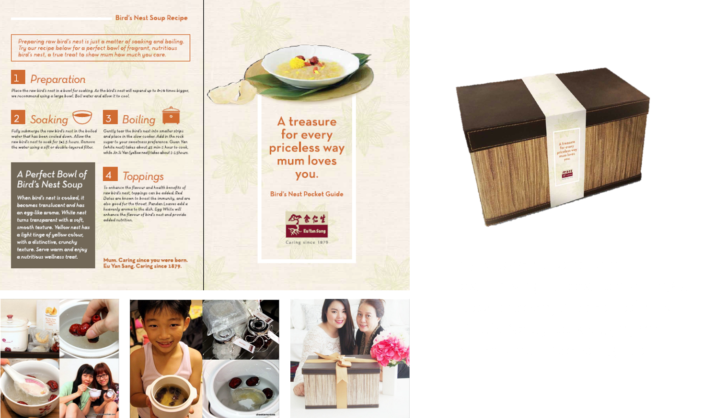
Exclusive Gift Box Contents
Premium Slow Cooker2pcs Raw Bird's NestPremium Rock SugarRed DatesDetailed Pocket Guide (Recipe & Tips)Premium Packaging Design
500k+
Organic Views Generated
😊 Positive Sentiment
High resonance with emotional messaging
2.1 · Social Media 29
Integrated Ecosystem Flow
Social Media
Builds presence
↓
Influencers
Accelerate trust
↓
User Generated Content (UGC)
Sustains credibility
↓
Paid Media
Amplifies what already works
SMU · Day 1 — Module 2
2.1 · Social Media
Content Optimisation for Different Platforms
One idea, many platforms — each with its own rules of reach and relevance.
2.1
2.1 · Social Media 30
Every platform has its own audience behaviour, content format, and engagement expectations.
Optimising content ensures reach, relevance, and performance.
2.1 · Social Media 31
Professionals, credibility-focused
Thought leadership, case studies, insights
Clear structure, professional tone
Value-first, avoid sales-heavy posts
Visual-first, emotional connection
High-quality visuals, strong aesthetics
Short captions, clear CTAs
Use of reels, stories, carousels
Fast, entertainment-driven, scroll-heavy
Hooks within 1–2 seconds
Authentic, informal, human-focused
Trends, voiceovers, fast captions
Community-led, family-oriented
Community, events, relatable stories
Longer captions work here
Great for older demographic and niche groups
Website
Trust-building, information-seeking
Email / EDM
Direct communication, conversion-driven
2.1 · Social Media 32
Long vs short form
Static vs video vs carousel
Search-driven vs feed-driven
Professional tone vs casual tone
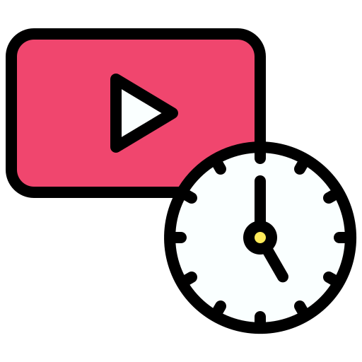
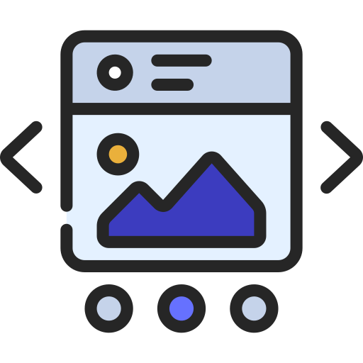
2.1 · Social Media 33
Website Content
SEO-structured: headings, keywords, clarity
Trust indicators: testimonials, case studies
Scannable information architecture
Blog Content
Educational storytelling
Internal linking for navigation
Optimised titles & meta descriptions
2.1 · Social Media 35
Transforming one core piece of content into multiple formats while adapting to platform needs.
Example Flow
1 blog post
→
LinkedIn article
→
Instagram carousel
→
TikTok explainer
→
Email newsletter tip
→
Website FAQ section
→
Short clips or quotes for social
AI can instantly:
Rewrite tone
Shorten content
Reformat structure
Extract key insights
2.1 · Social Media 37
Understanding Reach vs. Engagement vs. ROI
👁 Reach
Definition
Measures the total number of unique people who see your content. It reflects the extent of your content's visibility.
Primary Purpose
Drives Awareness
Key Metrics
Impressions
Video Views
Unique Visitors
Follower Growth
❤ Engagement
Definition
Measures how the audience interacts with content. It indicates how well content resonates.
High engagement signals interest and increases organic visibility via algorithm prioritization.
Primary Purpose
Signals Resonance
Key Metrics
Likes & Comments
Shares & Saves
Click-Through Rate (CTR)
📈 ROI
Definition
Measures the tangible business impact of social media efforts relative to the cost.
Primary Purpose
Validates Results
Key Metrics
Cost Per Acquisition (CPA)
Conversion Rate
Attributed Revenue
Customer Lifetime Value
SMU · Day 1 — Module 2
Hands-on
Activity 4
Adapt one message across platforms — formats, objectives, metrics.
A4
⏱ 20 minutes
2.1 · Social Media 38
Goal: Create a Platform-Specific Content Plan Using Your AI Image. Objective: Learn to adapt one message across platforms with different formats, objectives, and success metrics. Suggested tools — ChatGPT, Gemini, Grok
Step 1
Choose One Core Message
Pick a single message to communicate using your AI image (product promo, event, service, etc.).
Step 2 · 1 min
Select Three Platforms
Choose any three: LinkedIn, Instagram, TikTok, Facebook, Website, Email.
"Improve my content plan based on platform best practices. Check caption tone, format, and metrics for relevance."
Prompt to try: "Using the image I generated earlier, help me create a platform-specific content plan. Here is my core message: [insert 1-sentence message]. I want to adapt this for three platforms. For each, provide: Format · Caption rewritten to match the platform's tone & audience · Objective · Success metric. Present the plan in a clear table with three rows, one per platform."
SMU · Day 1 — Module 2
Pause
Tea Break
Back shortly — refill, stretch, compare notes.
☕
SMU · Day 1 — Module 2
2.2
Email Marketing
The one channel you actually own — right message, right person, right moment.
2.2
2.2 · Email Marketing 39
✉ What is Email Marketing?
Direct communication with customers via email
Used for sales, updates, education, and relationship building.
Why It's Important
One of the highest ROI marketing channels
You own your audience (not affected by algorithms)
Low cost, highly scalable
Very personal and targeted
2.2 · Email Marketing 40
Subject Line
Grabs attention. Decides whether the email gets opened.
Header / Branding
Logo, brand colours, trust elements.
Call-To-Action (CTA)
Tells users what to do next. "Shop Now" · "Register Today" · "Download Free Guide"
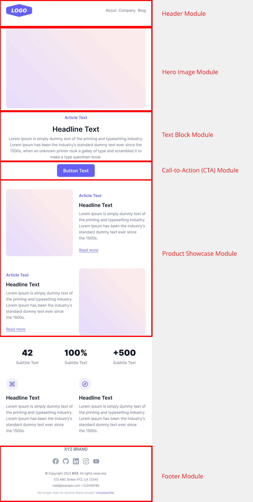
Preview Text
Short supporting teaser under the subject.
Main Content
Message, story, offer, or update. Can be text, images, or video.
2.2 · Email Marketing 41
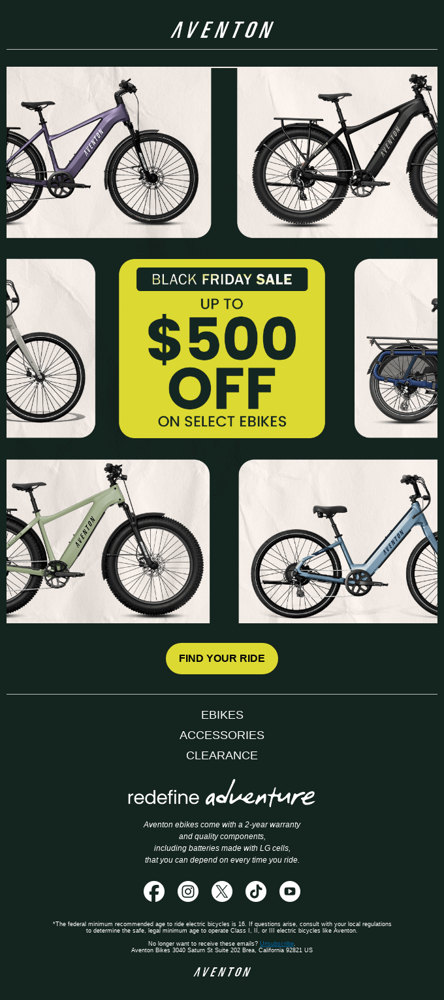
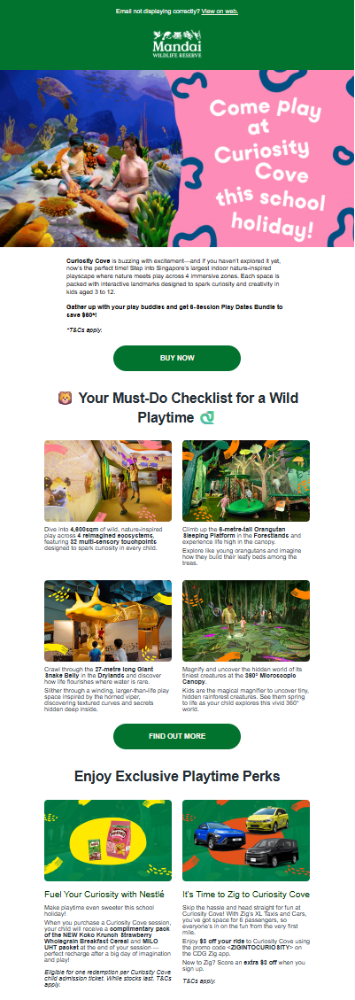
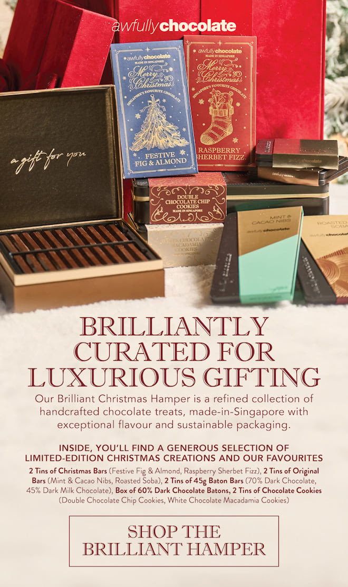
2.2 · Email Marketing 42
Email Marketing is one of the best channels to connect with users at different life stages.
💡 Best practice is to align messages to users' life stages, delivering the right content at the right moment.
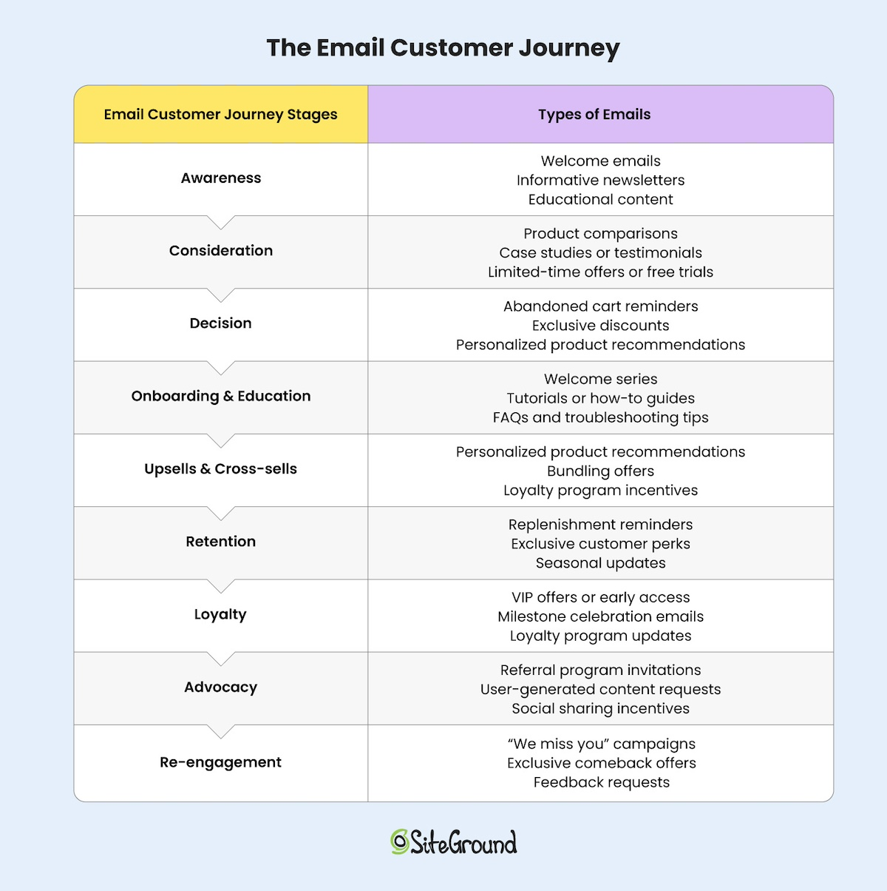
2.2 · Email Marketing 43
Landing in the inbox, not the spam folder
◆ 1 · Prove it's really you
Authenticate your domain
SPF · DKIM · DMARC — DNS records that prove the email truly came from you
Set up once, in your email tool — then forget it
Since 2024, Gmail & Yahoo require them for bulk senders. No authentication → no inbox
● 2 · Keep a clean reputation
Keep spam complaints under 0.3% — the line Gmail & Yahoo draw
Remove inactive & bounced addresses — stop emailing people who never open
Use double opt-in · one-click unsubscribe (now required)
Warm up a new domain slowly; avoid image-only emails (a spam trigger)
A small, engaged list beats a big, cold one — every time. Reputation is earned one send at a time.
2.2 · Email Marketing 44
Most of this, your email tool does for you.
You don't hand-edit DNS or scrub lists by hand. A proper platform — Mailchimp, Klaviyo, HubSpot, Brevo — handles the plumbing.
Auto-suppression
Bounces, unsubscribes & spam complaints are removed automatically — protecting your reputation.
Authentication setup
Step-by-step SPF / DKIM / DMARC, so you stay compliant with Gmail & Yahoo.
Sending infrastructure
Managed servers & IP reputation — you borrow theirs instead of building your own.
Engagement segmentation
Sends less to disengaged contacts before they drag your reputation down.
Deliverability dashboard
Inbox-placement & reputation health you can actually see (esp. HubSpot, Klaviyo).
One-click unsubscribe
Adds the unsubscribe header Gmail & Yahoo now require — automatically.
Your job: a clean list, relevant content, and don't blast. The tool does the rest.
2.2 · Email Marketing 45
Nurture / value email
Lead with the reader's goal, not your product.
Personalised subject — "Tina, attract more clients…" earns the open before they see a single word inside.
One job, one CTA — a single "Learn more". No five-button clutter.
Verified sender + easy unsubscribe — the deliverability hygiene from the last slide, in practice.
Sender: Shopify Partners — a relationship email that gives before it asks.
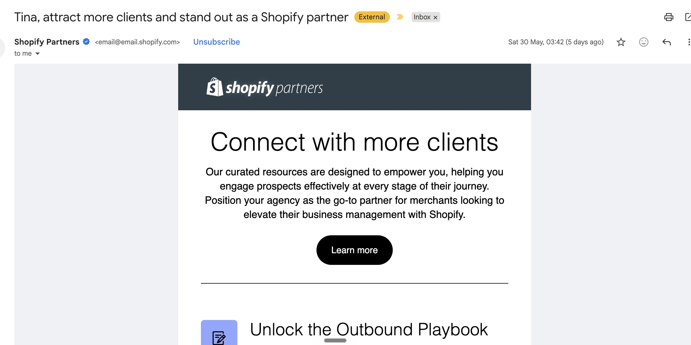
2.2 · Email Marketing 46
Triggered lifecycle email · automation
Sent by a behaviour, not a calendar.
Trigger, not a blast — fires off one rule: "inactive for 90+ days". Nobody pressed send.
What, when, what to do — names the user, the date, and the exact way to stop it.
Action in bold — the one thing you can do is impossible to miss.
Sender: HubSpot — this is the automation on the next slides, in the wild.
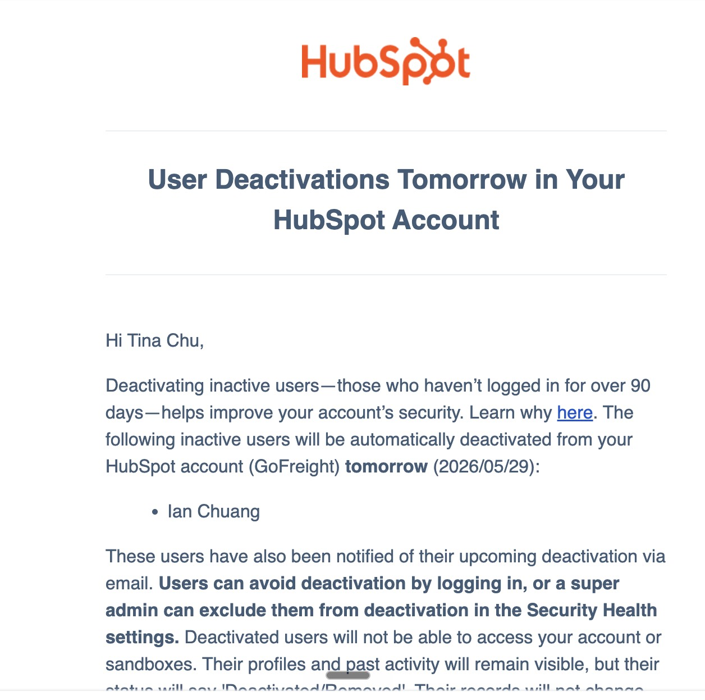
2.2 · Email Marketing 47
Promotional / launch email
Sell the click, not the product.
Curiosity + a hard number — "[Free Masterclass] The email flows behind $700k/month" is one promise.
A person, not a brand — "Hey there — Dickie here." Reads like a note from a friend.
Borrowed trust — named speakers do the convincing for you.
Sender: Dickie Bush & Nicolas Cole — every line drives one CTA: save your seat.
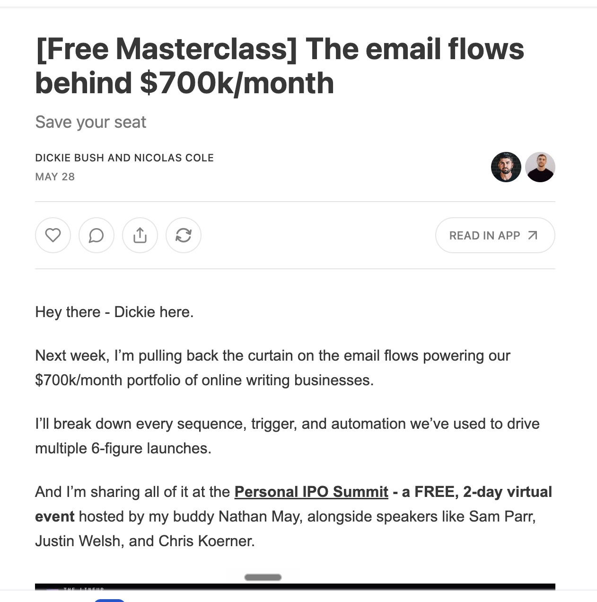
2.2 · Email Marketing 48
Email Is Not a Broadcast Channel
Owned Channel — not rented like social platforms
Highly Measurable & cost-efficient
Works best when targeted and behaviour-driven
◎ Best Channel For:
ActivationRetentionChurn Prevention
Common Mistake
"Most SMEs send the same email to everyone, treating it like a broadcast rather than a conversation."
2.2 · Email Marketing 49
Email Automation = Right Message, Right Time
Email workflow automation sends emails based on user behaviour or lifecycle stage — not on a fixed calendar.
⚡ Examples of Triggers
Trigger
User signs up
Trigger
User completes action
Trigger
User goes inactive
Trigger
User reaches milestone
Trigger
User abandons journey
Automation removes guesswork and manual work.
2.2 · Email Marketing 50
Why Email Automation Drives Better ROI
Hyper-targeted communication tailored to specific user needs
Prevents churn before it happens by identifying inactivity early
Drives deeper product adoption through timely nudges
Scales personalisation without scaling manual effort
Time management, emotional support, identity shift
Same brand. Completely different needs.
"If we sent the same email to all these moms, it would feel irrelevant — or even insensitive."
2.2 · Email Marketing 54
Lifecycle Determines Content — Not Marketing Calendars
⇄ What Changes by Stage
Tone
Frequency
Content Depth
Calls-to-Action (CTA)
Strategic Shift Example
Early Stage — Education & Reassurance
"Here is how we help you succeed…"
↓
Later Stage — Activation & Habit-Building
"Unlock this feature now…"
"Relevance beats frequency."
2.2 · Email Marketing 55
Smart Email = Behaviour × Lifecycle
Trigger
What did user do?
+
Lifecycle
Where are they?
=
Relevant Email
Right message
Practical Examples:
🍼 Pregnant mom + Hasn't opened emails
→ Send Reassurance Content
💼 Back-to-work mom + Clicks often
→ Send Productivity Tips
2.2 · Email Marketing 56
What to Avoid
Treating email like a newsletter blast
Over-emailing without delivering real value
Ignoring lifecycle differences among customers
Measuring opens instead of actual behaviour change
Critical Reminder
"More emails ≠ better results."
SMU · Day 1 — Module 2
Hands-on
Activity 5
Create a welcome email that converts the first action.
A5
⏱ 20 minutes
2.2 · Email Marketing 57
Goal: Create a welcome email for your brand on Claude. Objective: Create an email that converts users' first action. Suggested tools — ChatGPT, Gemini, Grok
Step 1
Open Claude & use the prompt
Be sure to change the details in target audience and objective.
Step 2
Implement tweaks & compare
Refine based on your preferences. Bonus: try on another AI and compare quality!
Prompt to try: Create a complete welcome email (HTML design + copy) for new users with key actionable content above the fold to drive product activation.
Target Audience: [Insert audience] Objective: [Insert goal] Context: New users who just signed up. Job to be done: Start using the product.
Deliverables: Subject line (40-50 characters) · Preheader text · Welcome headline · Body copy (2-3 sentences) · Primary CTA button text · 1-2 key benefit statements · Full HTML email design (mobile-responsive). Tone: Welcoming, helpful, action-oriented.
SMU · Day 1 — Capstone
Wrap-Up
The whole day, in one brand.
Everything we covered — create demand (positioning & brand), the offer, capture demand (social, email, website), convert and keep — one company did all of it. Last task: reverse-engineer how a fitness race became a $130M brand.
★
Day 1 — Capstone Case Study · Discuss 58
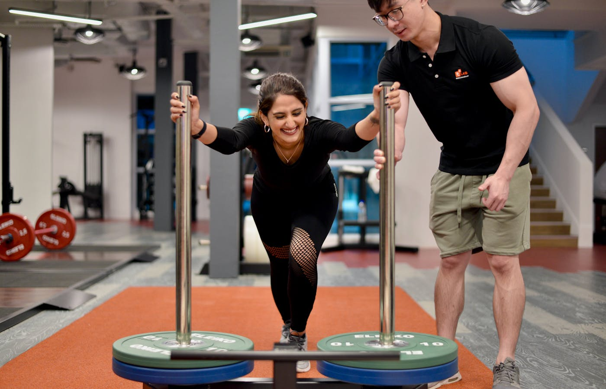
HYROX
A standardised fitness race — 8 × 1 km runs + 8 functional stations. Identical worldwide: personal, measurable, shareable.
700 → 550k
athletes, 2017 → 2025
$130M
revenue, 2025
80+ · 30
races · countries
390M+
#Hyrox TikTok views
Reverse-engineer HYROX.
You've got the whole framework now. In your groups, answer every question:
1 · Create demand
What's their positioning? Their brand? What job is HYROX really hired to do?
2 · The offer
What's their offer strategy — the product, the price, the way it's packaged?
3 · Capture demand
Which channels — social, email, website — do they use, and which one does the heavy lifting?
4 · The growth loop
How do they acquire → convert → keep → and turn athletes into advocates?
⏱ 10 min in groups · then we map it together on the board
Day 1 — Capstone · The answer
HYROX: position vs brand.
The clearest case all day of how the two differ — and why both are deliberate.
Positioning · the argument
Standardised fitness racing — the same format anywhere in the world (8×1 km runs + 8 functional stations) — for the everyday gym-goer who wants real competition. Unlike CrossFit, which is varied, elite and intimidating, or a marathon, which is pure running. The one sharp strategic choice is standardisation: because the format is identical everywhere, your time is comparable and you can qualify globally. It deliberately excludes the elite-only crowd and the purely non-competitive.
Brand · the reputation banked
The roar of the event hall, "I did a Hyrox" worn as a badge, the global community, the gyms that train people for it, the merch and the identity, the sense that it's the thing right now. What it banks is a feeling: belonging, accomplishment, being early to something.
Standardisation is the position — a deliberate, comparative choice. The tribe and the prestige are the brand — the reputation the market deposits at every event. Hyrox chose the format; the market chooses what it means to be a Hyrox person.
Day 1 — Capstone · The answer 59
HYROX: the offer, the channels, the loop.
The offer
One standardised race, identical worldwide, with no prerequisites — so it's attainable, measurable and shareable. The festival model does the rest: the race draws you in, and the event hall keeps you there for hours.
Capture demand · the channels
The heavy lifter is participant social: #Hyrox is around 390M TikTok views, and every athlete films their own race. Grassroots distribution through gym chains like F45 brings people in without ad spend. And the influencer model is inverted — the celebrities race, they don't pose.
The growth loop
They acquire through gym integration and social proof, convert with a single low-friction format, and keep people with rankings, the festival and belonging. Then 550,000 finishers each share a personal win, which brings the next ones in.
By 2025 the 700 athletes of 2017 had grown to 550,000 at $130M revenue, with most of the reach driven by participants themselves.